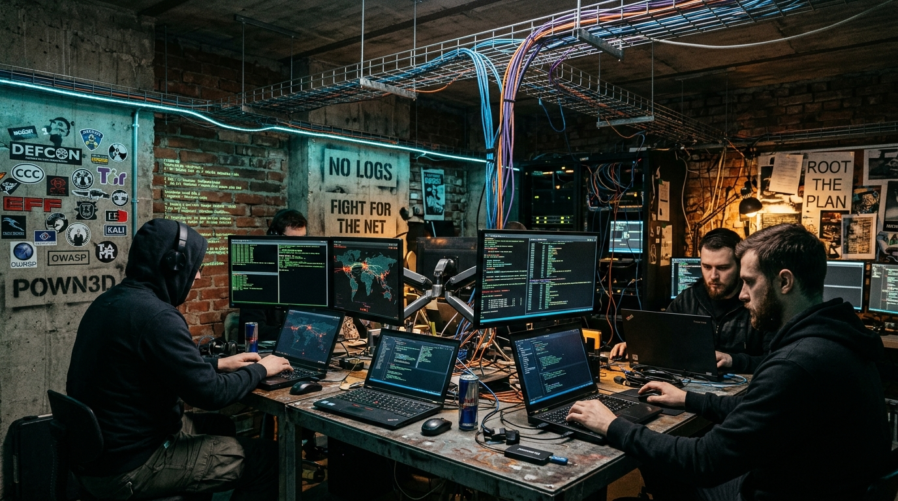
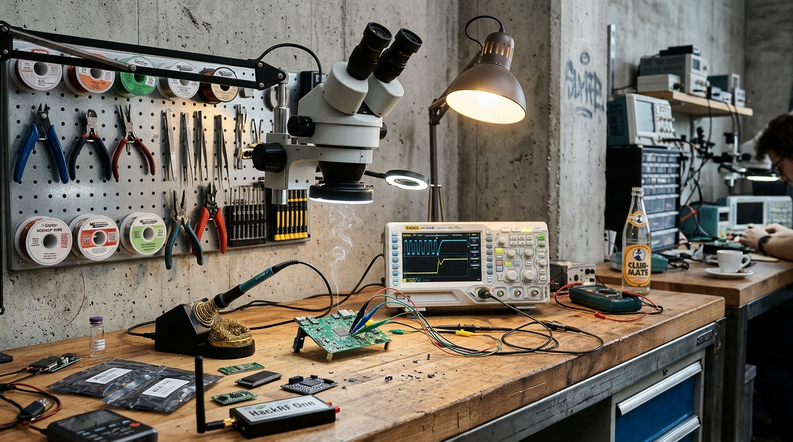
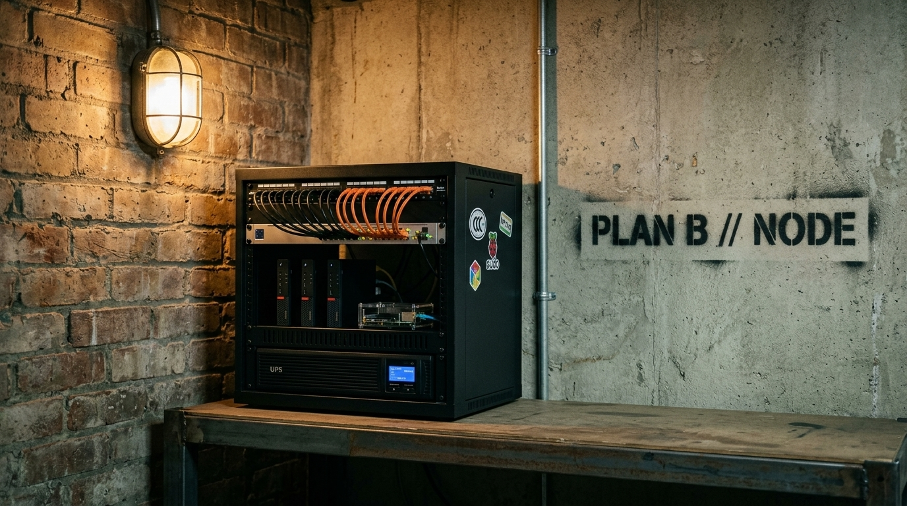
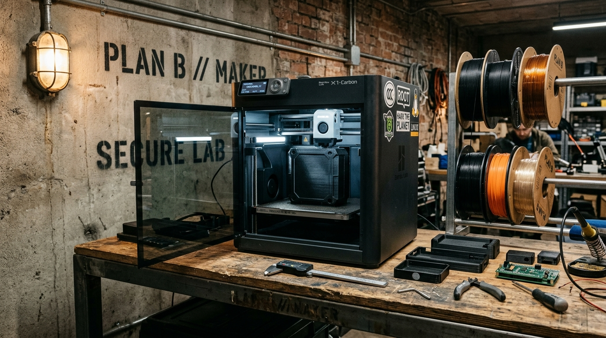

OS BASTIDORES DO PLAN B
O laboratório subterrâneo onde os fundadores se reúnem para maratonas de hacking, investigação de vulnerabilidades, formações práticas para a comunidade e para continuar a ser o que sempre foram: hackers.
//_SYS.OVERRIDE::[0x00_ROOT] ▒▒▓▓██ NO_CORP_BS ██▓▓▒▒
===============================================================================
⠀⠀⣸⢀⡾⣝⣯⢟⣽⣻⢿⡿⣿⣿⣿⣿⣿⣿⣿⣿⣿⣿⣿⣿⣿⢿⣝⣯⡻⣝⣚⣆⠀⠀⠀
⠀⠀⠘⣿⡹⣝⢾⣻⢾⡽⣯⣿⢿⣿⣯⢿⣿⣿⣿⣿⣿⣿⣿⣿⣟⡿⣾⣵⣻⢧⢏⡶⠆⠀⠀
⠀⠀⣴⣋⢵⣫⠾⣽⣯⢿⣽⣻⣿⣿⢯⣟⡿⣾⣽⣳⣿⣿⣽⡷⣯⣟⡷⣞⣧⣻⠮⡥⠀⠄⠀
⠀⠀⢹⡯⣎⢷⣻⢷⣾⣟⡾⣷⣿⣯⣿⡿⣽⣳⢿⣿⣿⣿⣿⣿⣷⢯⡿⣝⠶⣭⡛⣴⣾⠁⠀
⠀⠀⠀⠀⣿⡻⣼⢻⡿⣼⣻⢿⣿⣿⣿⣿⣿⣿⣿⣿⣿⣿⣿⣿⣿⣿⣿⣻⢟⡿⣸⡸⣿⡟⠀⠀
⠀⠀⠀⢹⣿⣷⣻⣼⣷⣿⣿⣿⣿⣿⣿⣿⣿⣿⣿⣿⣿⣿⣿⣿⣿⣷⣯⡿⣼⡹⣽⣻⡇⠀⠀ [!] SYSTEM_COMPROMISED
⠀⠀⠀⣿⣿⣿⣽⣿⢯⣷⠏⠿⢿⣿⣿⣿⣿⣿⣿⣿⣿⣿⢿⣻⠋⠑⠫⠝⠒⢻⢷⡻⣴⡀⠀ >>> ACCESS: LEVEL_0_ROOT
⠀⠀⢸⣽⣞⣷⣿⡮⠭⠄⠀⠀⠒⠻⣿⡿⠿⠛⠟⠛⡏⠺⠋⠉⠀⠀⠂⠢⠾⠭⣷⣛⣦⠅ >>> NODE: RED_TEAM_LAB
⠀⠀⠑⠉⠀⠉⠀⠀⠀⠀⠀⠀⠀⠀⠀⠀⠀⡀⡀⠀⠀⠀⠀⠀⠀⠀⠀⠀⠀⠀⠀⠈⠉⠁⠀ >>> MODE: JUST_DEV
⠀⠀⠀⠀⠀⠀⠀⠀⠀⠀⠀⠀⠀⠀⠀⠀⢨⣷⣟⠀⠀⠀⠀⠀⠀⠀⡀⠀⠀⠀⠀⠀⠀⠀⠠
⠀⠀⠀⠀⠀⠀⠀⠀⠀⠀⠀⠀⠀⢀⠀⠄⣼⣿⣿⣌⠀⣄⠀⠀⠀⠀⠀⠀⠀⠀⠀⠀⢠⣄⡀ ▒▒▓▓██░░░░▓▓▒▒
⠁⣸⣮⣇⠀⠀⠀⠀⠀⠀⠀⢀⣤⣾⣿⢶⠉⠋⠉⠏⠫⢻⣧⣄⣀⠀⠀⠀⠀⠀⠀⢠⣾⣛⣯ >> BYPASSING_FIREWALL...
⠀⢻⣯⣿⡿⣶⢶⠶⢶⣶⣿⡿⣏⣿⠋⠀⠀⠀⡀⠀⠀⢹⡟⠷⠿⢿⢿⣷⠳⣶⡿⠟⠛⣾⡯ >> [OK] 127.0.0.1:8080
⠀⢸⣻⢿⠷⣋⡈⠀⠈⠉⠉⠁⣍⠉⠀⠀⠀⠀⠁⠀⠀⠘⠃⣦⠀⠈⠈⠉⠀⠉⠁⠀⠲⠿⠁
⠉⠉⠺⠿⠗⠁⠀⠀⠆⠀⠹⠈⡄⠀⠀⠀⠀⠀⠀⢠⢀⠛⡀⠀⠀⠀⠀⠀⠉⠒⠀⠀⠀
⠀⠀⠀⠀⠀⠀⠀⠀⠀⠀⠀⢘⣥⡇⠐⠄⢀⠀⡠⠀⠠⢊⣸⡯⡇⠀⠀⠀⠀⠀⠀⠀⠀⠀⠀
⠀⠀⠀⠀⠀⠀⠀⠀⠀⠈⡀⣬⣿⣿⣿⣦⣤⣤⣴⣤⣶⣿⢾⣟⢿⢡⠄⠀⠀⠀⠀⠀⠀⠀⠀
⠀⠀⠀⠀⠀⠀⠀⠀⠀⠘⡰⡿⣼⣿⢿⣿⣿⣿⣿⣿⣿⡿⣾⣿⡯⡝⠀⠀⠀⠀⠀⠀⠀⠀⠀
⠀⠀⠀⠀⠀⠀⠀⠀⠀⢐⣤⣝⣿⠟⣿⡏⣿⣯⣽⣶⣜⣵⡍⣷⡦⡄⡄⠀⠀⠀⠀⠀⠀⠀⠀
⠀⠀⠀⠀⠀⠀⠀⠀⠀⠈⠛⠛⠿⠟⠿⠇⠿⠿⠿⠿⠿⠿⠓⠛⠋⠃⠀⠀⠀⠀⠀⠀⠀⠀⠀
⠀⠀⠀⠀⠀⠀⠀⠀⠀⠀⠠⡀⠀⠀⠀⠀⠀⠀⠀⠀⠀⠀⠀⠀⠀⢀⡄⠀⠀⡄⠀⠀⠀⠀⠀
⠀⠀⠀⠀⠀⠀⠀⠀⡆⠀⠀⠘⠀⡄⣤⡄⣤⠀⡄⢠⡄⣤⣤⣤⠚⠀⠀⠀⠀⠀⠀⠀⠀⠀⠀
⠀⠀⠀⠀⠀⠀⠀⠠⠀⠀⡀⠀⠀⠁⠿⢙⠿⣙⣇⣹⡊⢟⠀⠟⠀⠀⠀⡀⠀⠀⠀⠀⠀⠀⠀
⠀⠀⠀⠀⠀⠀⠀⠀⠰⠈⢂⠀⠀⠀⠀⠉⠈⠀⠀⠀⠀⠀⠈⠀⠀⠀⠀⠃⠀⠀⠀⠀⠀⠀⠀
⠀⠀⠀⠀⠀⠀⠀⠀⠀⠀⠀⠠⣦⡀⠀⠀⠀⢀⠀⣤⠀⣀⠀⠀⣀⣴⠎⠀⠀⠀⠀⠀⠀⠀⠀
⠀⠀⠀⠀⠀⠀⠀⠀⠀⠀⠀⠀⠛⠿⣶⣲⣞⢻⣭⣶⢿⣟⣷⣿⡟⠃⠀⠀⠀⠀⠀⠀⠀⠀⠀
____ __ ___ _ __ ____ __
/ __ \/ / / | / | / / / __ ) / /
/ /_/ / / / /| | / |/ / / __ |/ /
/ ____/ /___/ ___ |/ /| / / /_/ //_/
/_/ /_____/_/ |_/_/ |_/ /_____/(_)
▒▒▓▓██ BASTIDORES // HACK OR BE HACKED ██▓▓▒▒
===============================================================================
root@plan-b:~# ./inject.sh --target=ALL --silent --no-mercy _
O PACTO DOS FUNDADORES: "NUNCA DEIXAREMOS DE SER HACKERS"
Durante mais de uma década, trabalhámos como técnicos de cibersegurança, analistas de SOC (Security Operations Center) de Nível 3, pentesters e engenheiros forenses de resposta a incidentes críticos. Enfrentámos turnos noturnos intermináveis, alertas sob pressão extrema e a burocracia sufocante das grandes corporações, onde o foco muitas vezes não era aprender ou proteger, mas preencher relatórios em Excel.
Percebemos que o mundo corporativo nos estava a roubar a alma que nos fez começar: a curiosidade pura de desmontar coisas para ver como funcionam, a adrenalina de descobrir uma vulnerabilidade e a partilha aberta de conhecimento entre pares. O Plano B nasceu dessa recusa.
A cafetaria lá em cima — com os seus espressos arábica tirados com precisão cirúrgica, o Pão de Ló tradicional fofo do Artur e o Mil-Folhas de café caramelizado — é o nosso sustentáculo económico independente e a nossa sala de estar pública. Mas cá em baixo, nos bastidores, está o verdadeiro motor do Plano B. Este espaço físico reservado é onde mantemos viva a chama: um bunker sem chefes, sem métricas corporativas, onde continuamos a programar, a fazer auditorias de segurança, a treinar em war rooms e a formar a próxima geração de hackers. Aqui existe um lema sagrado "nao existe ambiente melhor do que o rial, a etica ficou a porta"
O CENTRO HACKER: ESPAÇOS FÍSICOS DOS BASTIDORES
Estética puramente industrial e urbana: betão aparente, calhas técnicas expostas, stencils nas paredes e bancadas de eletrónica pesada.

Red Team War Room & Maratonas CTF
A mesa central de operações conjuntas: paredes de cimento cru com tags urbanas e autocolantes de hacking, calhas suspensas com cabos de rede ethernet coloridos, estações ThinkPad ligadas a múltiplos ecrãs com dashboards de exploração e telemetria.

Bancada Maker & Engenharia Reversa
Oficina de dissecação de hardware com pegboard industrial de ferramentas: osciloscópio digital Rigol, analisador lógico de protocolos, microscópio binocular para soldadura de chips SMD, antenas SDR HackRF One e programadores de memória flash.

Mini-Rack Homelab & Servidores Locais
À escala real e realista da cave: um único mini-rack compacto de 12U instalado num recanto de betão. Abriga um switch gerido de 24 portas, patch panel de cabos curtos, cluster Proxmox com 3 mini-PCs compactos (estilo ThinkCentre Tiny) para nós Matrix/Tor, e uma UPS silenciosa.

Estação de Impressão 3D & Prototipagem
Bancada de fabricação aditiva e modelação física: impressora 3D CoreXY fechada de alta velocidade para fabricar caixas personalizadas para ferramentas hacker (Flipper Zero, Raspberry Pi), estruturas para teclados mecânicos sob medida e adaptadores de bancada.
O QUE SE PASSA NOS BASTIDORES DO PLANO B
As quatro frentes de atividade que decorrem diariamente para além do balcão da cafetaria:
Capture The Flag & War Games
Sessões noturnas às sextas e sábados com maratonas de hacking competitivo. Participação em torneios mundiais de CTF (DEF CON Quals, HackTheBox, Google CTF) e desenvolvimento de desafios próprios para a comunidade portuguesa.
- Foco: Binary Exploitation (Pwn), Reverse Engineering, Web & Crypto
- Ambiente: Ecrãs múltiplos com dashboards de pontuação e tráfego em tempo real
- Combustível: Cold brew concentrado 18h e fatias de Pão de Ló
Hardware Hacking & RF Sandbox
Bancadas com equipamento profissional para dissecação de hardware, dumping de memórias flash EEPROM/SPI, análise de portas de depuração JTAG/UART e exploração de protocolos de rádio sem fios.
- Ferramentas: Analisadores lógicos Saleae, HackRF One, Flipper Zero, microscópio SMD
- Testes: IoT doméstico, chaves de automóvel, chips NFC/RFID e medidores inteligentes
- Segurança: Mini gaiola de Faraday para isolar sinais eletromagnéticos
0-Day Research & Responsible Disclosure
Investigação ética de vulnerabilidades de segurança em software open source, sistemas embebidos e protocolos de rede. Quando encontramos falhas críticas, reportamos aos autores e colaboramos na correção.
- Publicações: Zines técnicos de autor e advisories de segurança
- Ética Estrita: Hacking 100% livre sobre obescurantismo da identidade, em conformidade com as boas práticas em prol da melhoria geral
- Bug Bounty: Os prémios de vulnerabilidades revertem para equipamentos do laboratório e salários
Servidores Locais & Infraestrutura Livre
Os bastidores alojam o nosso mini-rack homelab compacto de 12U, operando nós de redes descentralizadas e garantindo soberania digital para a comunidade do cybercafé.
- Serviços: Servidor Matrix/Element próprio, relay Tor de alta velocidade, nó IPFS
- DNS Seguro: Resolvedores locais DNS-over-HTTPS sem registo de logs
- Backups: Encriptação militar LUKS em armazenamento off-grid
FORMAÇÕES PRÁTICAS & MENTORIAS DOS FUNDADORES
Recusamos o formato tradicional de cursos teóricos com apresentações de slides. As formações dos bastidores do Plano B são 100% práticas, ministradas diretamente pelos fundadores para estudantes e informáticos que querem aprender a pensar como atacantes e defensores.
[MOD_01] Engenharia Reversa com Ghidra: Desmontar Binários do Zero
Aprende a navegar ficheiros ELF e PE compilados em C/C++, decifrar rotinas de assembly x86_64 e ARM, identificar vulnerabilidades de buffer overflow e reconstruir o fluxo de lógica original de programas sem código-fonte.
[MOD_02] Hardware Hacking Prático: Soldadura SMD, UART e Dumping de Firmware
Como conectar com fios a um router doméstico ou dispositivo IoT via pinos UART, obter uma shell de root na linha de comandos, extrair a imagem de firmware da memória flash com um programador CH341A e analisar o sistema de ficheiros SquashFS.
[MOD_03] Red Team Operations: Evasão de Antivírus e Ataques a Redes Corporativas
Simulação real de uma intrusão corporativa: reconhecimento OSINT, técnicas de phishing técnico com bypass de autenticação de dois fatores, exploração de Active Directory (Kerberoasting, BloodHound) e movimentação lateral.
[MOD_04] Rádio Definido por Software (SDR) & Análise de Frequências RF
Explora o espectro eletromagnético invisível ao nosso redor com RTL-SDR e HackRF. Captura e descodificação de sinais de telemática automóvel (433 MHz), leitura de telemetria meteorológica e análise de segurança de comandos sem fios.
[MOD_05] Sobrevivência Tecnológica & Foco: O Que Fazer Quando a IA Acelera
Workshop inspirado diretamente no livro oficial dos fundadores: estratégias práticas de deep work, filtragem de ruído informativo diário, técnicas de descompressão mental contra burnout informático e métodos para continuar a aprender e a focar sem ansiedade.
// COMO TER ACESSO ÀS FORMAÇÕES E AOS BASTIDORES
Os bastidores do Plano B não são uma escola comercial comum. Para participar nas formações especializadas ou ter acesso à bancada do laboratório, o candidato precisa de demonstrar compromisso e curiosidade:
O Desafio da Flag: No portal
Wi-Fi
local do cybercafé e nos pacotes de cabeçalho HTTP da nossa rede, escondemos pequenas pistas
criptográficas (esteganografia e cifras clássicas). Quem encontrar a FLAG{...} e a
apresentar ao barista tem acesso garantido à lista restrita de alunos dos fundadores com 50% de
desconto simbólico.
YzQwX3EzX3kwX2Zyel9lcnB1cnZiXzEzMzc=
ESPECIFICAÇÕES DE ENGENHARIA DO BUNKER
Infraestrutura física projetada para operações seguras de teste e longas jornadas de trabalho:
| Subsistema | Equipamento / Especificação | Função Operacional |
|---|---|---|
| Controlo de Acesso | Leitor RFID 13.56 MHz (Mifare DESFire EV3) + Teclado TOTP mecânico com rotação a cada 30 segundos. | Garante que apenas fundadores e participantes autorizados em formação acedem à zona de bastidores. |
| Proteção Eletromagnética | Caixa blindada RF (Gaiola de Faraday) com atenuação > 70 dB de 100 kHz a 6 GHz. | Permite analisar sinais de dispositivos e chaves inteligentes sem emitir interferência para a via pública. |
| Estação Maker & Soldadura | Estações de soldar JBC de precisão, microscópio estéreo com zoom contínuo e exaustor de fumos com filtro HEPA H13. | Soldadura e retrabalho seguro de chips micro-BGA, QFN e resistências SMD microscópicas. |
| Prototipagem Rápida & FabLab | Impressora 3D CoreXY fechada com câmara aquecida, bicos de aço endurecido (0.4mm/0.6mm) e filamentos técnicos (Carbon Fiber PETG, ABS, PLA fosco). | Modelação e impressão rápida de caixas protetoras para ferramentas de hardware hacking, gabaritos de teste e adaptações mecânicas. |
| Energia & Redundância | UPS trifásica APC Smart-UPS Online de 6000 VA ligada a banco de baterias de lítio LiFePO4. | Mantém servidores, estações de soldar e instrumentos de medição alimentados sem interrupções em caso de falha de rede. |
| Espresso Privado do Lab | Máquina manual de alavanca Flair 58 com manómetro de pressão e moinho cónico com mó de 71mm. | Extração de espressos artesanais com perfis de pressão personalizados (pré-infusão longa de 15s) para as madrugadas de CTF. |
TELEMETRIA EM TEMPO REAL DOS BASTIDORES
Stream simulado de logs do sistema de monitorização interna do bunker (IDS, sensores RF, servidor Matrix e extrações de café):
Terminaste a visita aos bastidores? Podes regressar à cafetaria pública a qualquer momento:
[ RETORNAR // CYBERCAFÉ PÚBLICO ] << VOLTAR AO ESPAÇO PRINCIPAL DO PLAN B >> [ REATIVAR MODO DISCRETO & DEGUSTAR CAFÉ E PÃO DE LÓ ]